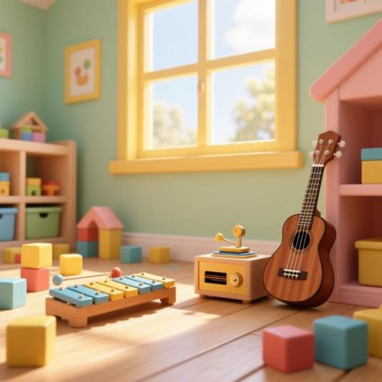
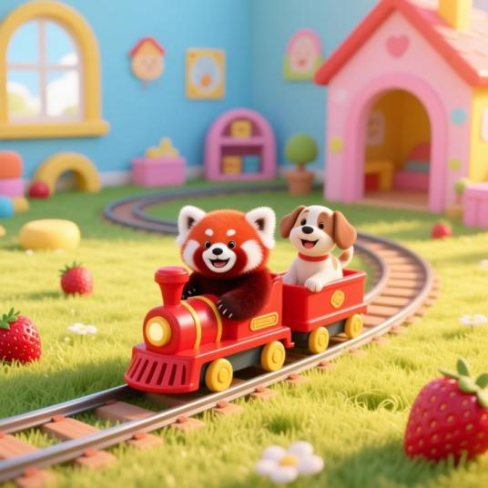

魔法小火車：鋪好軌道去車站！
點一點閃亮的「⭐星星格子」鋪上鐵軌，把小火車連到終點車站 🚉！
小熊客人點餐囉！
點選右邊的美味食材放上披薩吧！
阿奇出動：救援小動物！
先點格子帶阿奇 🐶 去救出小動物，再去終點旗子 🏁（可以直接點遠方的格子自動走過去喔）！
👆 點地圖格子，或按方向鍵帶阿奇走：
Mureka 純音樂配樂 & 彩虹木琴
預設使用無歌詞「純音樂配樂」不干擾語音！也可以切換兒歌演唱，或彈木琴喔！


星空晚安屋：陪小動物溫柔入睡
搭配 Mureka 水晶音樂盒純音樂，幫小動物蓋被子關燈、慢速數綿羊、點亮晚安小夜燈～
🌙
🐑 已經數了 0 隻慢速小綿羊
👆 輕輕點夜空，讓軟綿綿的小羊慢慢飄過雲朵～
☁️☁️🪵🌸🪵☁️☁️
🫙
小夜燈 0 隻螢火蟲
🌟 已點亮 0 / 7 顆晚安星星